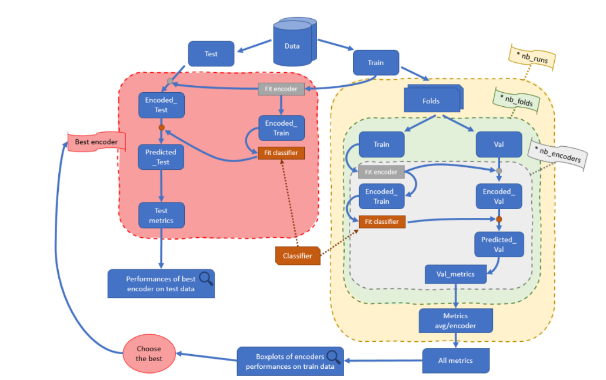
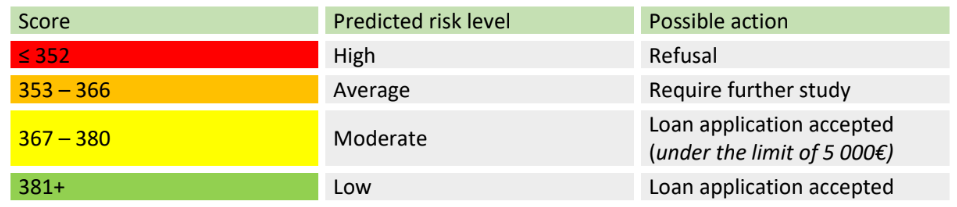
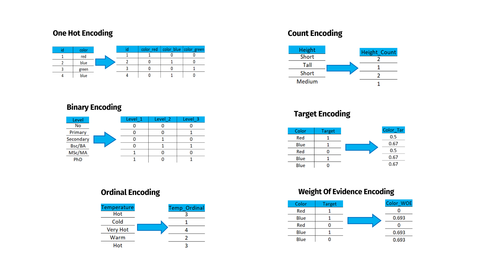

From September 2022 to September 2023, I did an apprenticeship as a member of the
Innovation Desk team at the Scoring Center in the filial Risk of BPN Paribas Personal Finance located
in Merignac. Through this year of apprenticeship, I wanted to increase my skills in Data Science,
discover new techniques and learn more about the working environment of a big company.
Member of the innovation desk team of PF RISK at the Scoring Center
Research on different categorical variable encoding techniques for Machine Learning models
Development of credit card granting scorecard for an entity in South Africa (logistic regression)
Development of classification models in Machine Learning
Data analysis and management
apprentice data scientist
details
The aim of this apprenticeship was, in a first time, to assist the data scientists of the team by doing a
research work about categorical encoders. And then, having a more business-oriented mission by
building a scorecard using logistic regression to identify “bad debt” individuals on credit cards for a
filial in South Africa.
For the first project, the data preprocessing has a very important influence when it comes to the Machine Learning
results. Most of the models can’t handle categorical variables (like RandomForest models which are
mainly used at the ScoringCenter), except if we change them into numerical values. The model
performances will rely on how we will encode those data. Depending on the method used, the
predictions can be highly impacted. And so, the precision might be increased or decreased. Through this research work I learned
new ways of encoding techniques (and their impacts) that can be usefull for data scientists.
For the second project, the Scoring Center teams often use Logistical Regression models. The aim of these models is to
attribute a “score” based on the input information of a client. It is a grade based on the values of his
explanatory variables (for example: age, Socio-Professional Category, income). Through this porject I learned how to build and present
a scorecard model. Working on a real business project with a real business goal was very nice. I also learned a lot on the methodology of a business
case and how to document your work.

developed programe to evaluate encoding tech

example of a scorecard's action table

studied encoding techniques